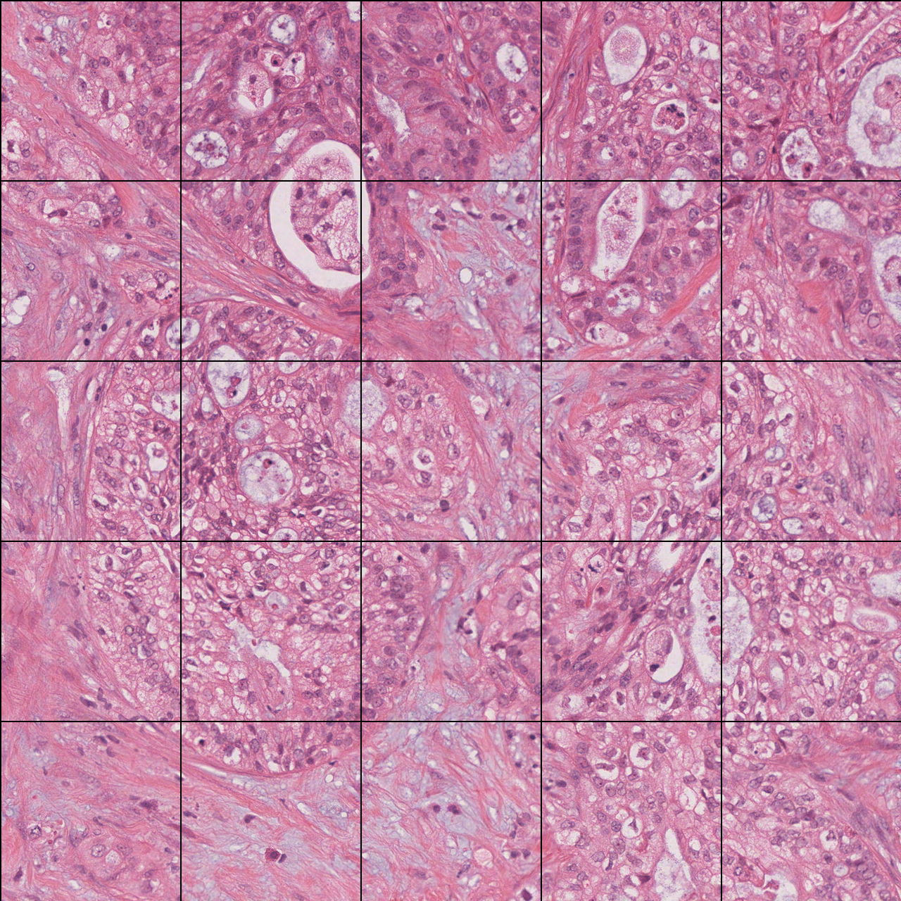

From a glass slide to a vector
Before any model, there's a long chain of ideas: a public cancer archive, gigantic digitized tissue slides, a foundation model that "reads" them, and a trick for shrinking a slide down to a handful of numbers. This page walks through each piece in plain language — the same ground the project's opening presentation covered.
1 · The data: TCGA
A public, multi-cancer archive
TCGA is one of the largest open cancer datasets ever assembled: thousands of patients across dozens of cancer types, each with matched tissue slides, clinical records (age, sex, survival), and molecular profiles (mutations, gene expression).
That pairing is what makes it special — for the same patient you can line up what their tumor looks like against how their disease actually behaved. This project uses eight TCGA projects:
2 · The images: whole-slide images
A scanned glass slide — at enormous scale
A pathologist's glass slide of tumor tissue is scanned at microscope resolution into a whole-slide image (WSI). The catch is the size: a single WSI can be on the order of 100,000 × 100,000 pixels — billions of pixels, often gigabytes on disk.
That's thousands of times larger than an ordinary photo. You simply cannot feed a whole slide into a neural network the way you would a normal image — it won't fit in memory, and most of it is empty background anyway.
3 · The fix: cut the slide into patches
Thousands of small, fixed-size tiles
Because a slide is too big to handle whole, it's chopped into a grid of small patches — typically a few hundred pixels on a side. A single slide yields hundreds to thousands of these tiles, each a bite-sized image a model can process.
Patches over background (empty glass) are thrown away; only tissue tiles are kept. From here on, the unit of analysis is the patch, not the slide.
…and here it is for real — a TCGA pancreatic-cancer slide (TCGA-3A-A9I9), with patches taken from that same slide:


4 · Reading patches: foundation models
Turning a patch into numbers
A foundation model is a large network pre-trained on enormous amounts of data so it learns general-purpose features without being told a specific task. UNI2 is one trained on millions of pathology patches.
Show it a patch and it returns an embedding — here a vector of 1,536 numbers summarizing what the tile looks like (its textures, structures, cell patterns). No labels needed: the embedding is a compact, numeric fingerprint of the image, ready for ordinary machine learning.
5 · Back to one slide: aggregation
Many patches, one prediction
After UNI2, each slide is a stack of patch vectors — and slides have different patch counts, so the stacks are different heights. But our questions ("what grade?", "what survival?") are asked per slide, not per patch.
So we aggregate: collapse all of a slide's patch vectors into a single fixed-length slide vector using summary statistics (mean, spread, percentiles). That one vector is what the classifiers and survival models actually see.
…which is exactly where this project picks up. See the story →